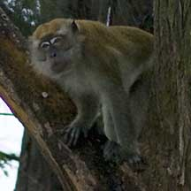
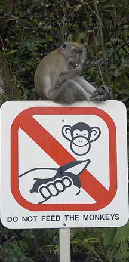
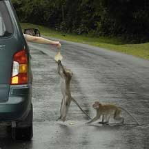
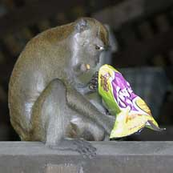
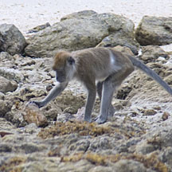
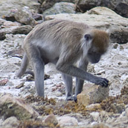
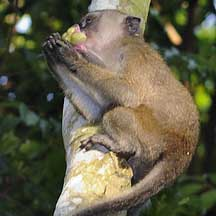
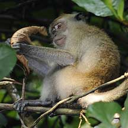
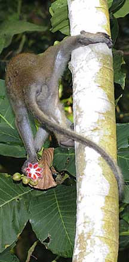

|
|
| vertebrates text index | photo index |
| Phylum Chordata > Subphylum Vertebrata > Class Mammalia |
|
Long-tailed macaque Macaca fascicularis Family Cercopithecidae updated Oct 2016 Where seen? These charismatic furry creatures are commonly seen in many of our wild shores. Native to Singapore, their original habitat was mangroves. In fact, they are sometimes also called Crab-eating macaques. They can be seen at Sungei Buloh Wetland Reserve, Sentosa, the Sisters Islands, Pulau Ubin and Pulau Tekong. They are also found in the Western and Central Catchment areas as well as at Bukit Batok Nature Park. Individuals may spill over to nearby parks and even urban areas. They are usually found in trees but may also forage on the ground. Features: Head and body to 45cm, tail to 56cm. Long limbed and long tailed indeed, it has soft silky fur olive brown above and paler below. The face is greyish with prominent white eyelids. These macaques are social and live in large groups of about 30 individuals including 2-4 adults and 6-11 females and their young. What does it eat? This macaque is omnivorous. In one study, the monkeys were observed to eat 186 different types of plants. This is a large proportion of the estimated 300 species that were fruiting in the forest during the study period. They also eat young leaves and shoots, and flowers too. As well as small animals such as small reptiles, spiders and insects. By eating their natural fruits and food, monkeys also help our forest to regenerate and to ensure a balance in the forest. Monkey life: Monkeys are social animals just like us. In the wild, they live in groups of 15-30 monkeys. Their social structure and behaviour are almost as complex as ours. Each monkey group (called a troop) is made up of a dominant male monkey, also known as the alpha male, and his harem of female monkeys. The troop may include a few other male monkeys are well. Monkeys spend a lot of time grooming each other. To them, this is an important social activity for developing friendships and strengthen social bonds. Monkeys and people: People often feed monkeys to have a closer look at these fascinating creatures. Some people think the monkeys are starving. Unfortunately, feeding usually leads to these monkeys having to be trapped and killed. Ironically, our monkeys are not starving. They have lots of natural food available to them. When our monkeys switch to human hand outs, the forest also suffers as the monkeys no longer play their natural role in dispersing seeds and maintaining the natural balance. More details about the effects of feeding monkeys. How can I save the monkeys? Leave them alone. Watch them from a distance and respect their natural diet and their natural role in our forests by not feeding them. Be a responsible visitor to our wild places:
|
 Sisters Island, Mar 07  The monkey can't read, but we can. Lower Peirce, Oct 03  Drive-by feeding kills monkeys as they rush towards cars, associating cars with food. Lower Peirce, Oct 03  Junk food is bad for people AND monkeys. Bukit Timah Nature Reserve, Sep 03 |
 Foraging on the sea shore, turning over rocks.  Sisters Island, Sep 11 |
 Admiralty Park, Jun 09  |
 Admiralty Park, Jun 09 |
| Long-tailed macaques on Singapore shores |
| Photos of Long-tailed macaques for free download from wildsingapore flickr |
| Distribution in Singapore on this wildsingapore flickr map |
|
Links
References
|